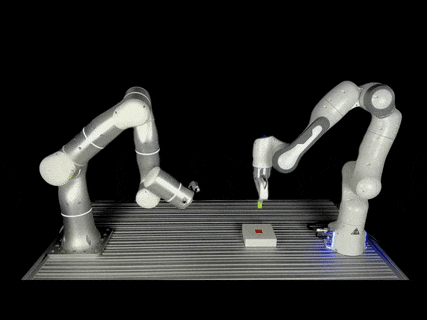
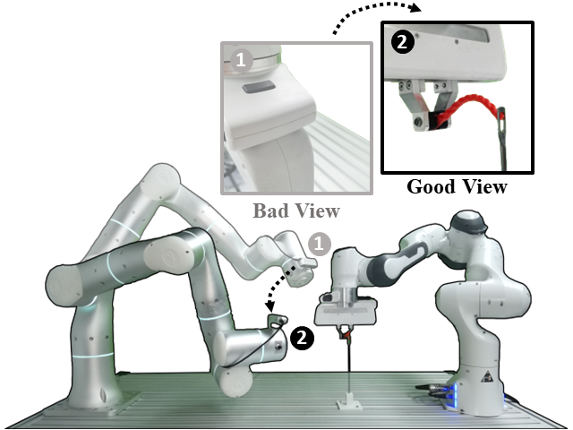
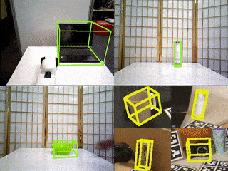

|
I am a Ph.D. student at Shanghai Jiao Tong University (SJTU). Currently, I am a member of Machine Vision and Intelligence Group (MVIG) under the supervision of Prof. Cewu Lu. I also worked closely with Prof. Lin Shao on my projects. I received my Bachelor's degree from Shanghai Jiao Tong University in 2020. My research interests include Robotics, Artificial Intelligence and Computer Vision. |
 |
|

 |
Jun Lv, Yunhai Feng, Cheng Zhang, Shuang Zhao, Lin Shao*, Cewu Lu* (*Equal advising) Robotics: Science and Systems (RSS) 2023 |
 |
Lixin Yang*, Kailin Li*, Xinyu Zhan, Jun Lv, Wenqiang Xu, Jiefeng Li, Cewu Lu (*Equal contribution) IEEE/CVF Conference on Computer Vision and Pattern Recognition (CVPR) 2022 (Oral) |
 |
Jun Lv*, Qiaojun Yu*, Lin Shao*, Wenhai Liu, Wenqiang Xu, Cewu Lu (*Equal contribution) IEEE International Conference on Robotics and Automation (ICRA) 2022 |
 |
Jun Lv, Wenqiang Xu, Lixin Yang, Sucheng Qian, Chongzhao Mao, Cewu Lu British Machine Vision Conference (BMVC) 2021 |
|

 |
Chen Wang, Roberto Martin-Martin, Danfei Xu, Jun Lv, Cewu Lu , Li Fei-Fei, Silvio Savarese, Yuke Zhu IEEE International Conference on Robotics and Automation (ICRA) 2020 |
- May. 2022: SAGCI-System: Towards Sample-Efficient, Generalizable, Compositional, and Incremental Robot Learning. 智东西 [video]
- Mar. 2022: SAGCI-System: Towards Sample-Efficient, Generalizable, Compositional, and Incremental Robot Learning. AdaComp (National University of Singapore)
- Conference Reviewer: ICRA'23, CVPR'23, IROS'23, ICCV'23